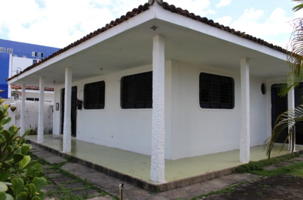
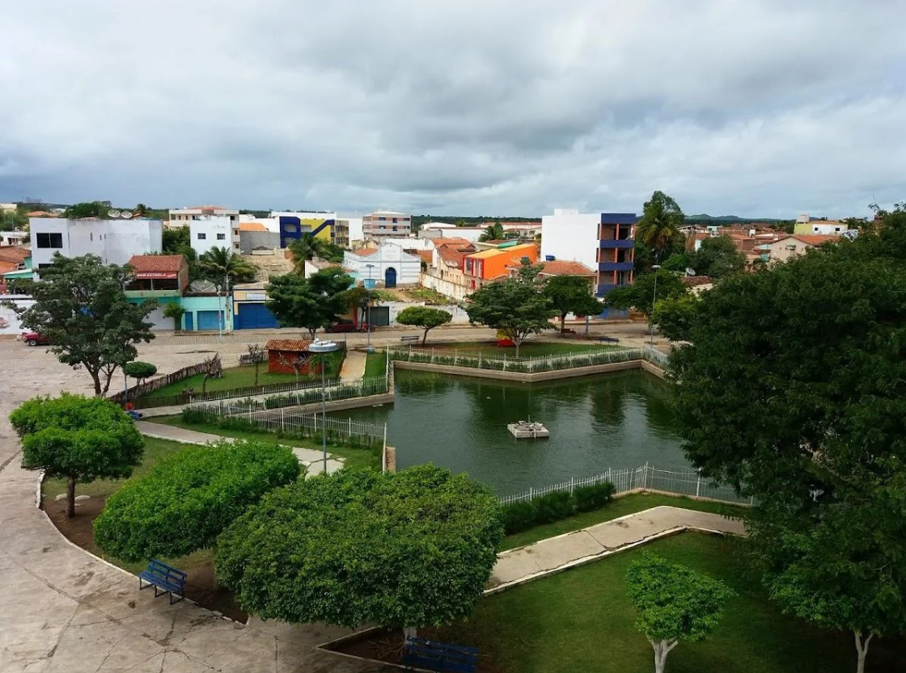

Onde esperar a Van?
Veja as fotos e orientações dos locais de embarque para não perder o horário da viagem.
Ponto de Encontro em João Pessoa (PB)

Imagem da casa de apoio localizada no Bairro de Jaguaribe, João Pessoa - PB (Avenida Capitão José Pessoa).
Ponto de Encontro em Princesa Isabel (PB)

Local exato de embarque na praça da estrela em Princesa Isabel PB.
Vídeo Explicativo do Local